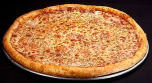

Pizza

Who doesn't like a slice of delicious pizza! Whether it is a plain cheese, a sussage, pepperoni, veggie, or all combined as in a supreme pie, there is something for every taste bud! Heck, there are even pizza pies with fruit toppings such as pineapples and strawberries for the daring and adventurous! Pizzas are a great meal and relatively healthy. They provide a break for those who are on the go with little time to cook. They reuire very few ingredients. However, the best part about pizzas besides their taste, is that they are very affordable!
History of Pizzas
The Incredible History of Pizza - La Cucina ItalianaPizza originated in 18th-century Naples, Italy, as a cheap, fast street food for the working poor. It evolved from ancient Mediterranean flatbreads, with the modern version emerging after tomatoes were introduced from the Americas. While Naples is the birthplace, Raffaele Esposito is often credited with creating the first Pizza Margherita in 1889 for Queen Margherita.1889 (Margherita Pizza): Legend holds that Raffaele Esposito created a pizza with tomatoes, mozzarella, and basil (representing the Italian flag) for Queen Margherita. Early 20th Century (Global Expansion): Italian immigrants brought pizza to the United States. The first US pizzeria, Lombardi’s, opened in New York City in 1905. Post-World War II: American soldiers returning from Italy fueled a boom in popularity, turning pizza into a global staple.